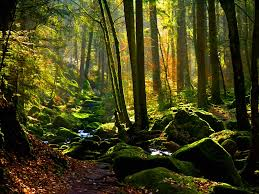
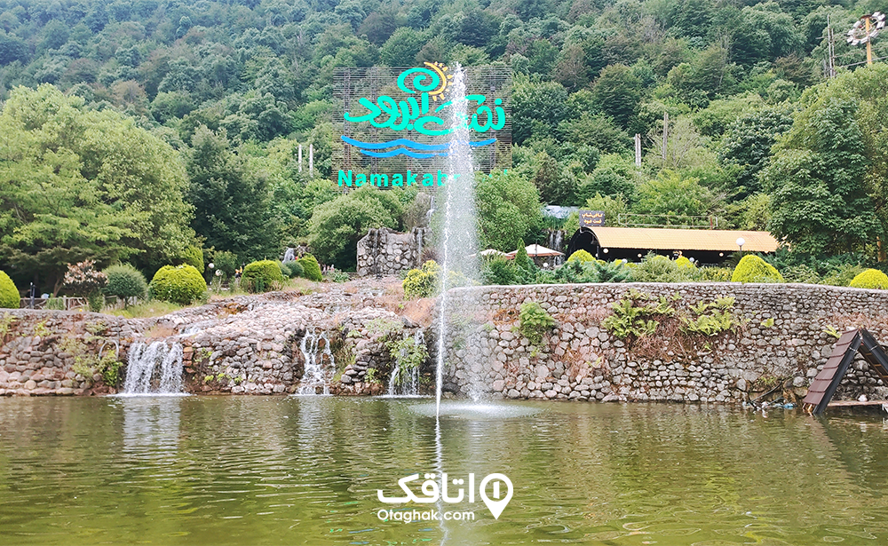

رای دیگر کاربردها، جنگل (ابهامزدایی) را ببینید.
جنگل آمازون در برزیل
تصویر جنگل در نزدیکی منطقه نمک آبرود در ایران
جنگل حوالی منطقه نمک آبرود ایران
ناحیهای که از درختهای انبوه پوشیده باشد را جنگل مینامند. در جنگل طبیعی معمولاً درختان کوچک و بزرگ و تنومند بهطور نامنظم و همچنین علفهای خودرو فراوانند. جنگل مجموعهای از درختان، درختچهها، پوشش گیاهی، جانوران و میکروارگانیسمها (قارچها، باکتریها و ویروسها) است که به همراه عوامل طبیعی غیرحیاتی مانند خاک، آب، دما، باد و … محیط و رویشگاه و زیستگاه مشخص و معلومی را به وجود آوردهاند. در ادبیات فارسی، به جنگل کوچک بیشه گفته میشود.[۱] جنگلها زیستگاههای مهم جهان هستند که حدود یک سوم سطح خشکیهای زمین را شامل میشوند.

نمک آبرود در کدام استان است؟ نمک آبرود در استان مازندران سرسبز و زیبا، قرار دارد و از تمامی مزایای طبیعی و امکانات گردشگری برخوردار است. آب و هوای نمک آبرود چگونه است؟ آبوهوای نمک آبرود معتدل و مرطوب است و ویژگیهای اقلیمی خاص شمال ایران را دارد. در تابستان، هوا گرم و شرجی بوده و دمای آن معمولاً بین ۲۵ تا ۳۵ درجه سانتیگراد متغیر است. در زمستان، دمای هوا کاهش مییابد و اغلب بارانهای سنگین همراه با سرما را تجربه میکنید.
بهترین زمان سفر به نمک آبرود چه زمامی است؟ بهترین زمان سفر به نمک آبرود ازنظر شرایط آبوهوا، فصل بهار و تابستان است. در این فصلها، طبیعت این منطقه در زیباترین حالت خود قرار دارد و شرایط برای تفریحات مختلف مانند تلهکابین، پیادهروی در جنگل و شنا در دریا مناسب است. فصل پاییز نیز با زیباییهای خاص خود، برای علاقهمندان به طبیعتگردی ایدهآل است. در زمستان، باوجود سرمای هوا، نمک آبرود همچنان مقصدی جذاب برای عاشقان آرامش و سکوت زمستانی به شمار میآید
پارک جنگلی نمک آبرود (جنگل نمک آبرود)
پارک جنگلی نمک آبرود
شروع سفر را میتوان با یقدم زدن در جنگلی مهگرفته و زیبا شروع کنید. پارک جنگلی نمک آبرود با داشتن مساحتی فراتر از ۲۰۰ هکتار، بستر رویش گیاهانی؛ چون افرا، شمشاد، ملچ و توسکا است و برخی از این درختان بیش از ۷ قرن عمر دارند. جدا از این موارد وجود انواع امکانات رفاهی، چشمه معدنی، مسیر پیاده روی توج گردشگران را به خود جلب میکند.
